LESSON 05 · MOLECULAR ORBITAL THEORY
分子轨道理论：从双原子分子到大分子的群轨道
分子轨道把电子铺满整个分子而不是局域在键上。这一讲先用 O₂ 的顺磁性说明价键理论缺了什么，再建立同核与异核双原子能级图，最后借助群论把中心原子轨道与配体的 SALC 逐个匹配起来，完成 CO、H₂O、NH₃、TaH₅、苯、BF₃ 与 NH₃·BF₃ 加合物的完整分析。
1. 价键理论缺了什么
价键理论（valence bond theory, VB）把电子限制在两个原子之间的定域键上。解释有机分子的几何与反应性时它相当成功，但有一类实验事实它处理不了。
讲义开篇给出两条动机。第一，VB 能画出 O₂ 的双键、让两个氧都满足八隅体，代价是强制所有电子成对，于是预言 O₂ 反磁性；而实验测得的液态氧能被磁铁吸住，说明 O₂ 有两个未成对电子，是顺磁性的。第二，共振论本身就暴露了定域键图像的不足——当分子无法用单一 Lewis 结构描述时，只能靠叠加若干个「不真实」的结构来补救。这两条指向同一个诊断：电子并不老实待在两个原子之间。
电子成对地待在两个原子之间。几何与反应性直观，但被迫让 O₂ 反磁。
电子填充遍及整个分子的轨道。O₂ 的顺磁性与光谱证据都能自然得到。
MO 更基本；VB 是 MO 在特定情况下的简化图像。两者对成键数目的结论常常一致。
分子轨道理论（molecular orbital theory, MO）的做法是：原子轨道线性组合（linear combination of atomic orbitals, LCAO）产生分子轨道，这些轨道遍及整个分子而不是局限于某两根原子之间；电子再按与原子中完全相同的三条规则（能量最低、泡利原理、洪特规则）填入这些轨道。
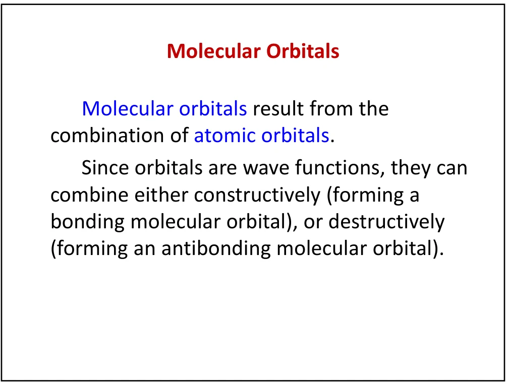
一个常见误解：MO 理论并不是「把 VB 的键拆开重画」。它换掉了基组——从「原子之间的键」换成「整个分子的轨道」。之所以值得换，是因为 O₂ 的磁性、N₂ 的光电子能谱、苯的紫外吸收这些实验事实，在 MO 框架下是算出来的结果，而不是需要额外补丁的例外。
2. 原子轨道怎样组合成分子轨道
组合方式只有两种。两个原子轨道的波函数同号相加（相长干涉 constructive interference）时，核间区域电子密度增大，把两个核「黏」在一起，得到能量更低的成键轨道（bonding orbital）；反号相减（相消干涉 destructive interference）时，核间出现一个节面（nodal plane），电子密度被排开，得到能量更高的反键轨道（antibonding orbital，加星号 *）。
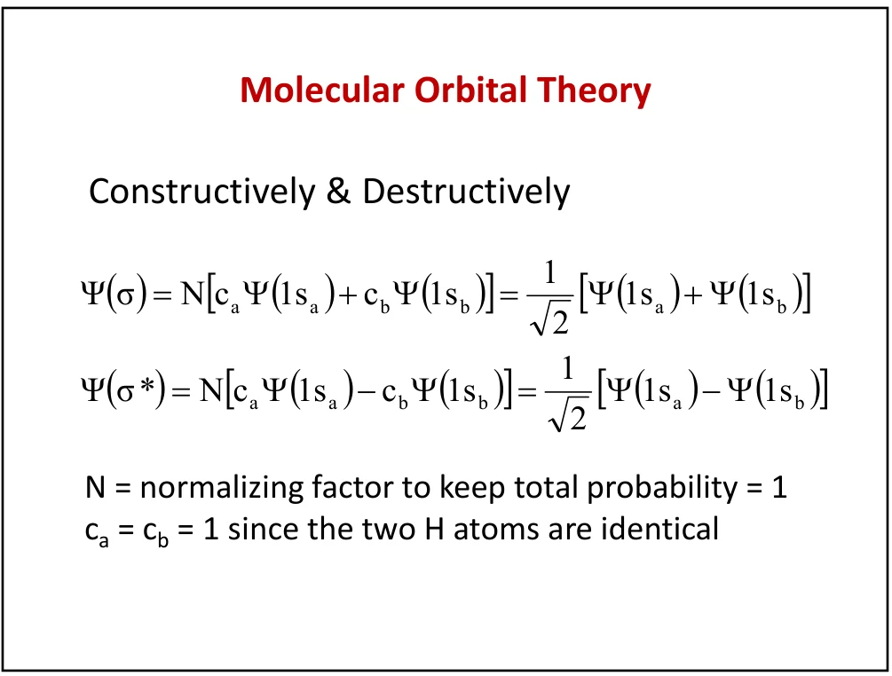
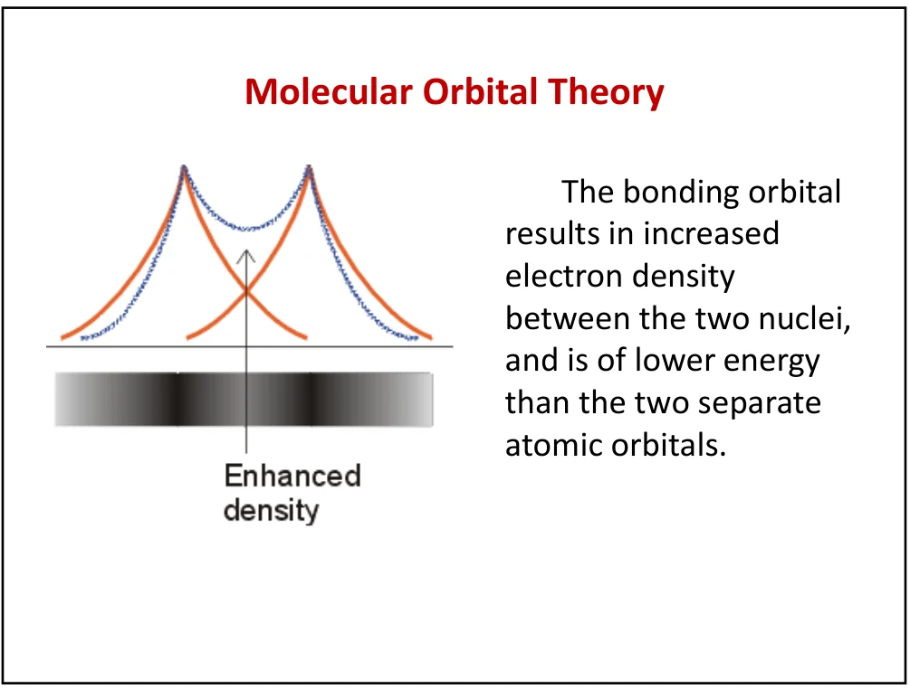
组合的三条规则
- 轨道数目守恒。
两个原子轨道组合成两个分子轨道，一个成键、一个反键。组合前后轨道总数不变——这条决定了「不产生新轨道，只重新分配能量」。
- 对称性必须匹配。
只有关于键轴对称性一致的原子轨道才能有效重叠。s 与 pz（沿键轴）组合成 σ 轨道；px 与 px 肩并肩组合成 π 轨道；而 s 与 px 的正负区域相互抵消，净重叠为零，不能组合。
- 能量必须相近。
两个原子轨道能量差越小，组合后成键轨道降得越低、相互作用越强。能量相差悬殊时几乎不发生混合（这正是第 8 节 H(1s) 与 F(2s) 那一处判断的依据）。
两个量常被混淆
重叠只决定「能分裂多少」，不决定「能不能组合」。能否组合由对称性把关，分裂多大由重叠与能量差共同决定。
分子轨道理论在数学上并不比价键理论简单——真正的难点在于：一个多原子分子有几十个原子轨道，组合出来的分子轨道数量相同，靠肉眼配对很快就会失控。这正是群论登场的位置：它不改变物理图像，只是把「哪些轨道的对称性一致」变成可以查表完成的操作。
3. 第二周期双原子分子的能级图
把 x 轴取作键轴。2s 与 2pz 沿键轴对称，给出 σ 型分子轨道；2px 与 2py 各自垂直于键轴，两两肩并肩重叠，给出 π 型分子轨道。每一对 2p 组因此产生一对简并的 π 与一对简并的 π*——「简并」意味着能量相同，这一点在填电子时决定洪特规则是否生效。
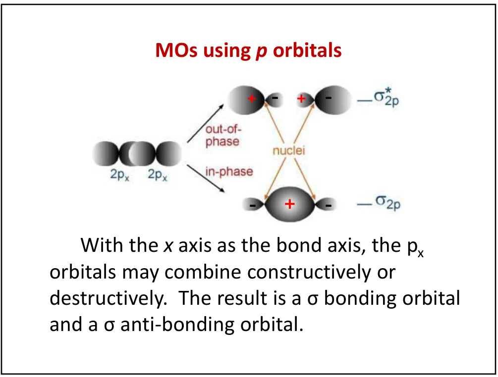
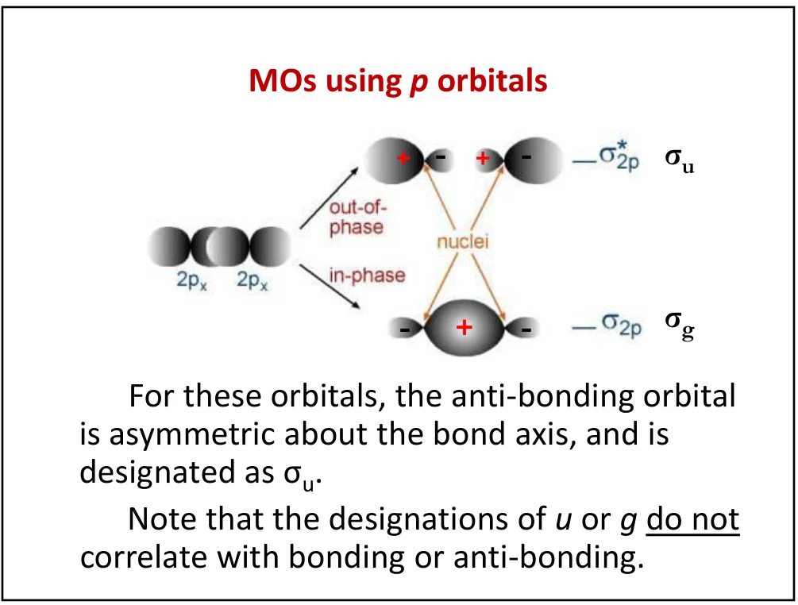
g 与 u：同核双原子分子的对称性标记
同核双原子分子（A₂）有反演中心，因此分子轨道还要标注关于反演的对称性：g（gerade，偶）表示波函数穿过中心反演后不变，u（ungerade，奇）表示反演后变号。成键 σ 是偶的，反键 σ* 是奇的；成键 π 是奇的，反键 π* 是偶的。异核双原子分子（AB）没有反演中心，不使用 g/u 标记——这是判断该不该写下标的第一条依据。
填充规则
- 能量最低优先。
电子先填入能量最低的分子轨道。
- 泡利原理。
每个分子轨道最多容纳两个电子，且必须自旋配对。
- 洪特规则。
能量相同的简并轨道（如 πx 与 πy）先各占一个电子且自旋平行，之后才配对。正是这一条产生了 O₂ 的两个未成对电子。
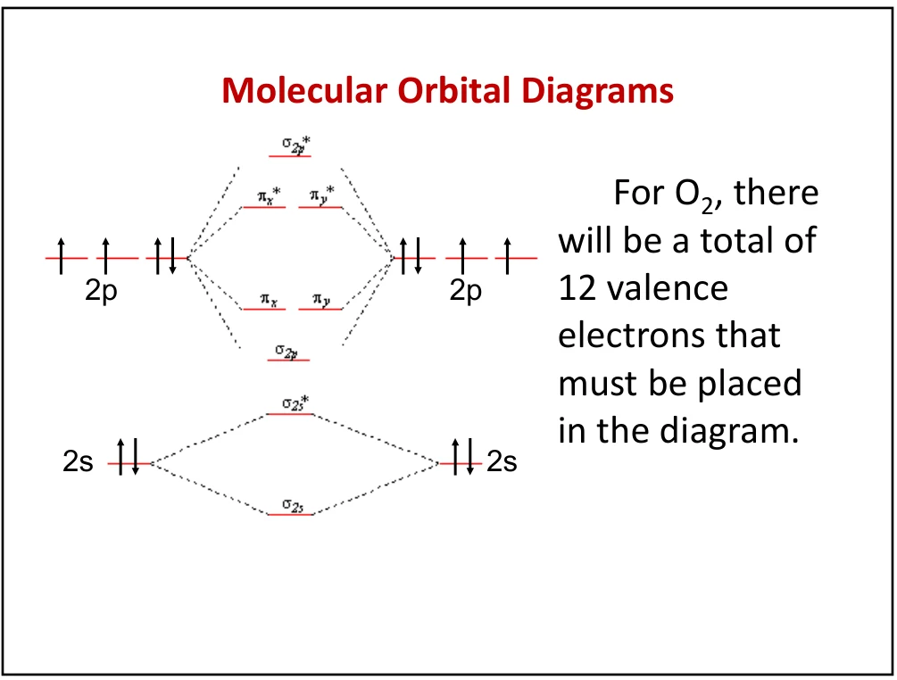
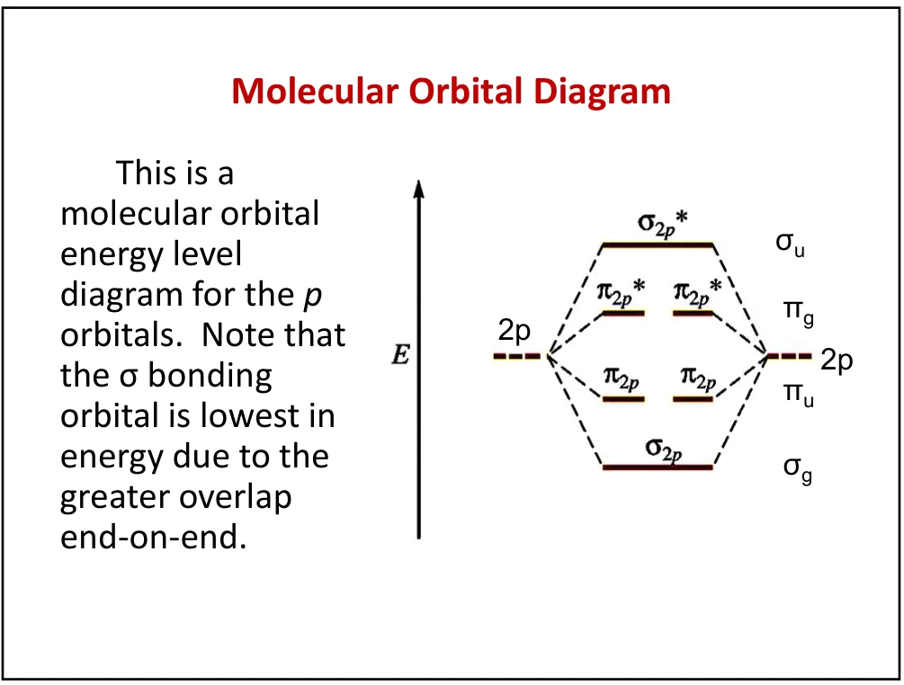
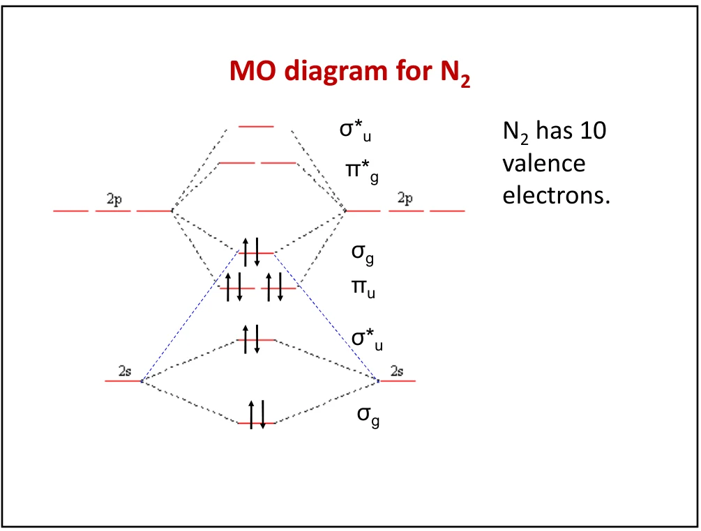
能级顺序会随核电荷改变
把 Li 到 Ne 的分子轨道图排出来会发现一个细节：随核电荷增大，2s 与 2p 之间的能量差变大，s–p 混杂（2s 与 2pz 的混合）减弱，σ2p 与 π2p 的相对高低会发生交换。因此 Li₂ 到 N₂ 用一套顺序，O₂ 到 Ne₂ 用另一套。这是绘图时最容易出错的地方，也是课后习题反复考的点。
判断用哪一套顺序，看的是分子落在哪一段，而不是「第二周期都用同一种图」。考试中若题目没给顺序，需要在图上标注所采用的版本。
4. 键级：一个能直接对照实验的数字
键级（bond order）定义为成键轨道中的电子数与反键轨道中的电子数之差的一半，它衡量净成键效果，是键强度与键长的指标。
这张表是 MO 理论最有力的检验之一：一个纯粹由能级图数出来的整数或半整数，同时解释了键长趋势与磁性变化，而 Lewis 结构做不到——它对这四个物种只能画出不同的共振式，还得额外解释为什么 O₂ 有磁性。
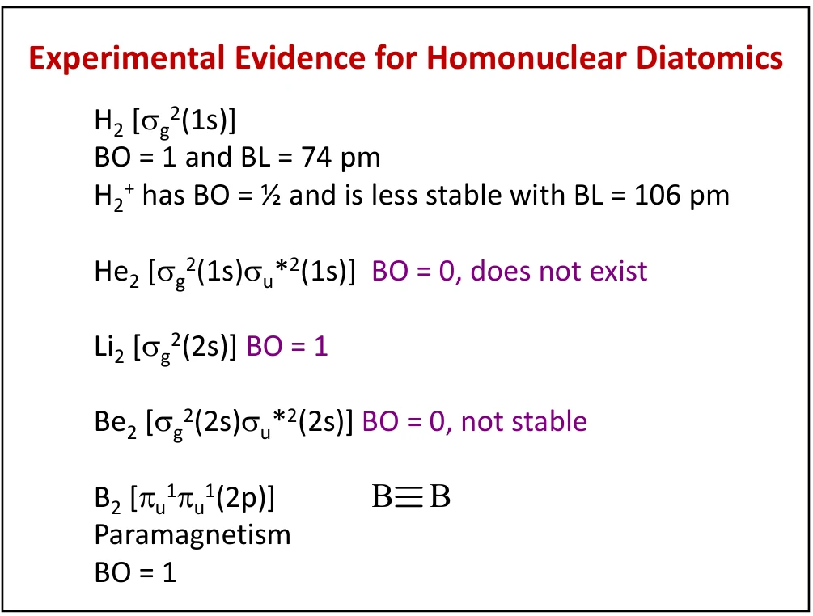
键级与键长的定量对照
键级不仅能比较同核双原子分子，还能比较同一分子的不同氧化态。这是 MO 相对于 VB 最实用的地方：同一个能级图，改变电子数就能预测一系列物种的性质。
5. 实验证据：光电子能谱
MO 理论预测的能级不是纸面推演。光电子能谱（photoelectron spectroscopy, PES）用已知能量的光子把电子从轨道中打出来，测量逸出电子的动能；两者相减就得到该轨道的电离能，也就是它在能级图上的位置。
谱图上每一个峰对应一个分子轨道：峰的位置给出轨道能量，峰的强度反映该轨道的电子数，振动精细结构则显示电离后键级与键长的变化。因此 PES 是把能级图「拍下来」的实验手段。
N₂ 的 PES 谱与能级图对得上
N₂ 的紫外光电子能谱给出三个清晰的电离能区间，分别对应 σg(2p)、πu(2p) 与 σu*(2s)。第一个峰的振动精细结构表明：电子从成键轨道电离后键级下降、键长伸长，因此振动频率降低。这个趋势与能级图的预测完全一致——能级图说 πu(2p) 是 HOMO 且为成键轨道，实验就说从它电离会削弱成键。
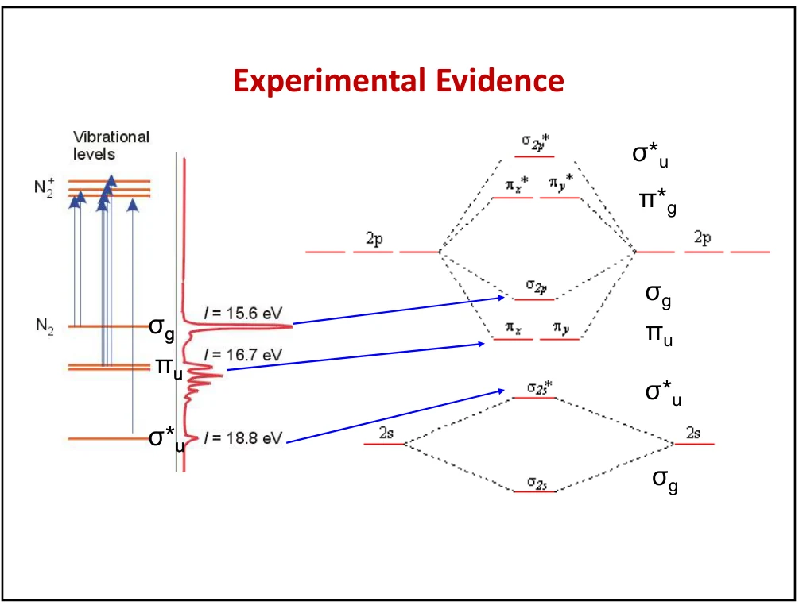
H₂ 与 H₂⁺：最简单的对照实验
H₂ 只有一个占据轨道 σg(1s)，键级 1，键长 74 pm。把 H₂ 电离掉一个电子得到 H₂⁺，键级降到 ½，键长升到 106 pm。这是「键级越小键越长」最干净的实验证据，也是 PES 与 MO 理论互相印证的入门例子。
6. d 轨道参与成键与异核双原子分子
过渡金属及更重元素的 d 轨道也能参与成键，按形状分两类：dz² 沿键轴对称，与 s 或 pz 一样形成 σ 型组合；dxz 与 dyz 垂直于键轴，与 px、py 一样形成 π 型组合。这是后面讨论配合物与金属–金属多重键的基础。
异核双原子分子：加上极性
异核双原子分子（HF、CO）没有反演中心，因此不再使用 g/u 标记。更重要的是，两个原子的电负性不同，原子轨道能量不再简并——电负性大的原子轨道能量更低。结果是分子轨道带有极性：成键轨道偏向电负性大的原子，反键轨道偏向电负性小的原子。
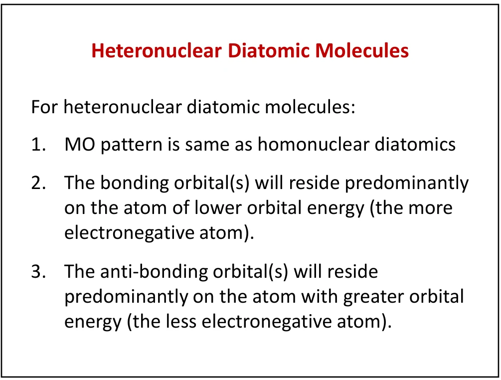
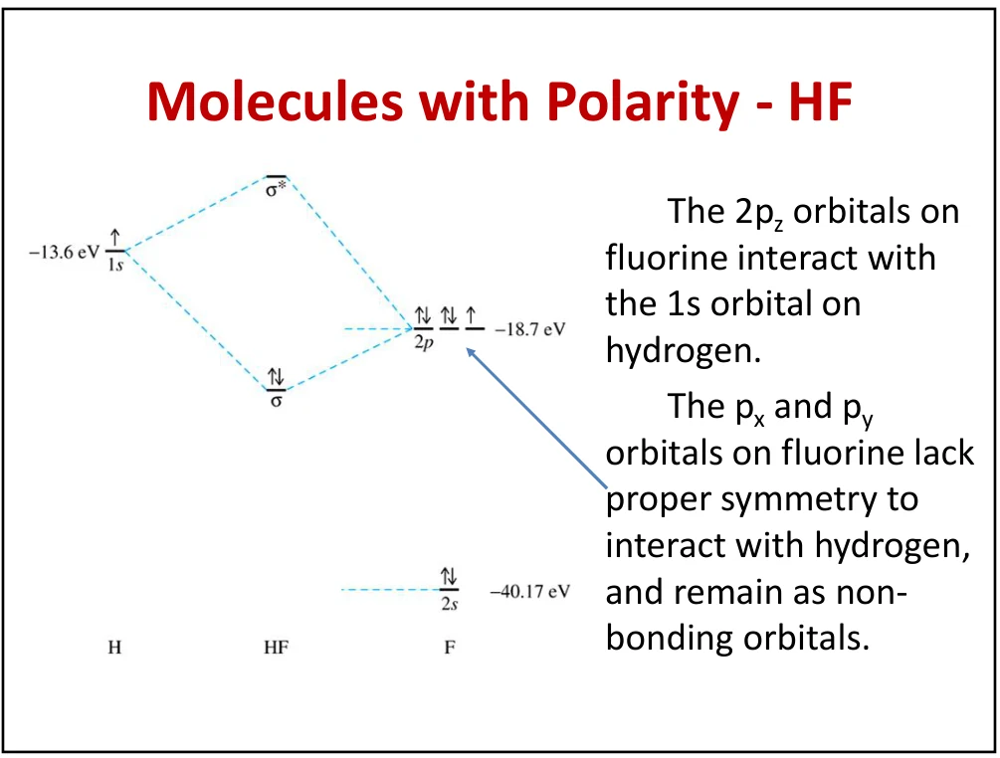
成键与反键轨道在两个原子上权重相同。使用 g/u 标记。
成键轨道偏向电负性大的 B，反键轨道偏向 A。不用 g/u。
能量差极大时，成键轨道几乎完全定域在电负性大的原子上，即 LiF 的离子键图像。
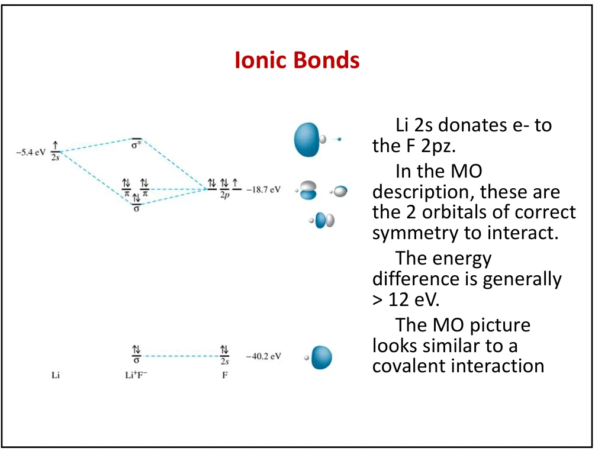
「成键轨道偏向电负性大的原子」是一条趋势规律，但 CO 是它最著名的例外：虽然氧的电负性更大，CO 的 HOMO 却主要定域在碳上。下一节专门处理这件事。
7. CO：同时是 σ 给体和 π 受体
CO 与 N₂ 是等电子体（都是 10 个价电子），因此两者的分子轨道图在形状上几乎一样，键级都是 3。但 CO 是异核分子，两个原子的原子轨道能量不同，于是分子轨道的成分发生偏移——这个偏移造就了 CO 在配位化学中最重要的性质。
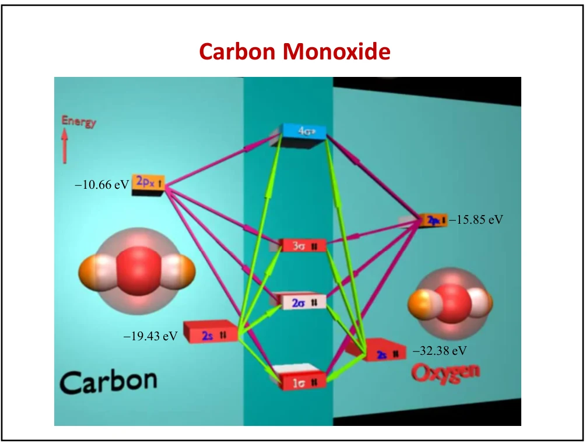
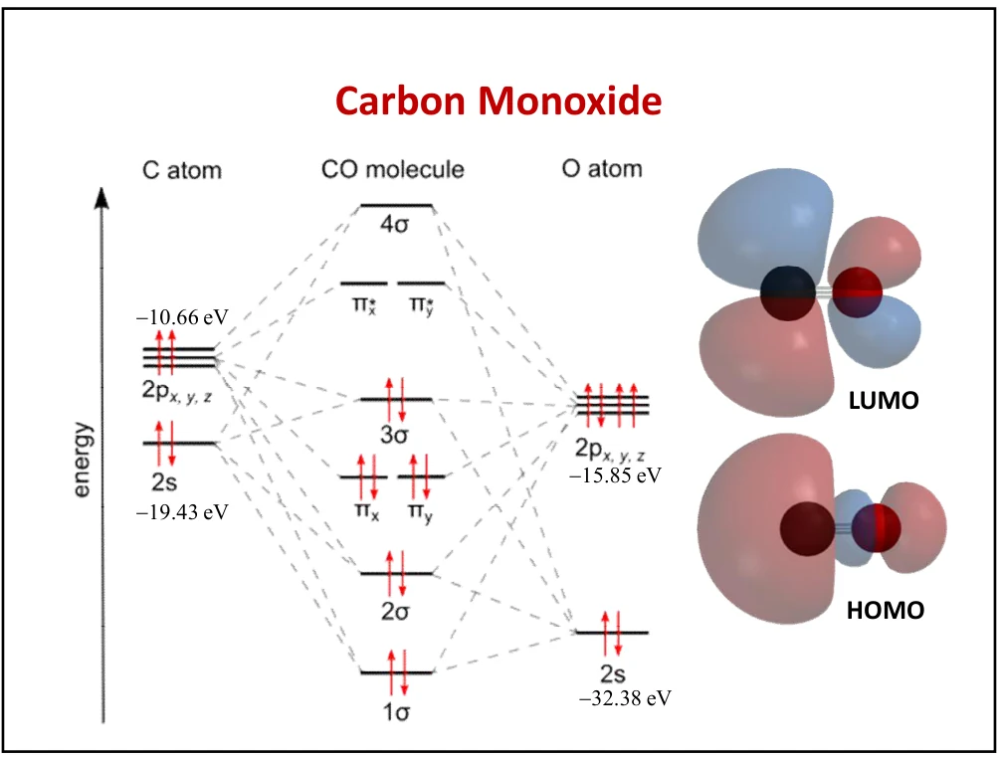
σ 给体 + π 受体 = 反馈键
CO 与金属成键时同时做两件事：HOMO（3σ，定域在碳上）向金属的空轨道提供电子对，形成 σ 键；金属的填充 d 轨道再把电子反馈进 CO 的 2π* 空轨道，形成 π 反馈键（back bonding）。两个作用相互加强——σ 给电子使金属富电子，更愿意反馈；反馈又使金属电子密度下降，更愿意接受 σ 电子。
这条推理链是红外光谱判断羰基配合物的基础：反馈键越强，C–O 键越弱，ν(C–O) 越低。电子密度越高的金属（低价、富电子的配体环境）反馈越强，ν(C–O) 越低——这是实验上可以直接测量的数字。
8. 多原子分子：群轨道与 SALC
双原子分子的两个原子轨道直接配对就够了。多原子分子不行：一个中心原子面对多个配体轨道，必须先判断「配体轨道的哪几种集体组合方式」在对称性上说得通。这些对称性匹配的配体轨道线性组合就是群轨道（group orbital, GO），也叫对称性适配线性组合（symmetry-adapted linear combination, SALC）。
- 确定点群。
按第四章的判别流程定出分子的点群，注意坐标约定：主旋转轴取作 z 轴。
- 给每个配体轨道做可约表示。
把每个配体轨道的坐标（或它自身）在每一个操作类下的特征标求出来，得到 Γ。规则与第四章相同：被移走的配体贡献 0，留下的按坐标是否变号取 ±1。
- 约化 Γ。
用约化公式拆成不可约表示之和。
- 与中心原子轨道匹配。
查特征标表的基函数列，找出对称性相同的中心原子轨道，逐一配对。
FHF⁻：把流程走一遍
FHF⁻ 是线型三原子阴离子，属 D∞h。由于 D∞h 是无限群、没有有限特征标表，通常降为 D2h 处理（主旋转轴仍取 z）。以 H(1s) 与两个 F 的轨道为基，约化结果是：Γ(2s) = Ag + B1u，Γ(2py) = B2u + B3g，Γ(2px) = B3u + B2g，Γ(2pz) = Ag + B1u。
约化之后才是这一步的关键判断。H(1s) 属于 Ag，它与 F 的两个 Ag 群轨道都对称性匹配：
这一处是本讲最重要的教学点：对称性匹配是必要条件，不是充分条件。对称性决定「能不能组合」，能量差决定「组合得多强」。两条规则必须同时检查，只查对称性会得出错误结论。
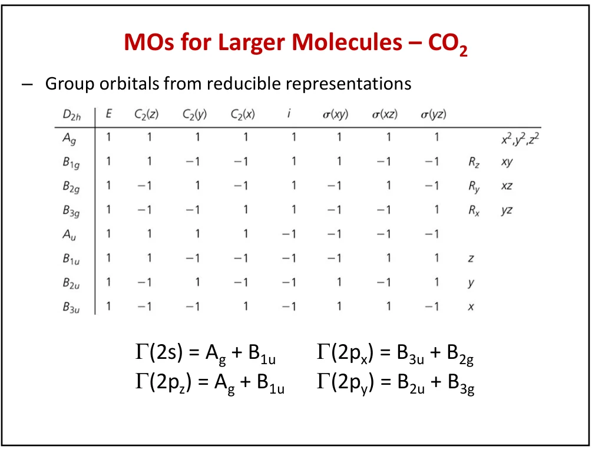
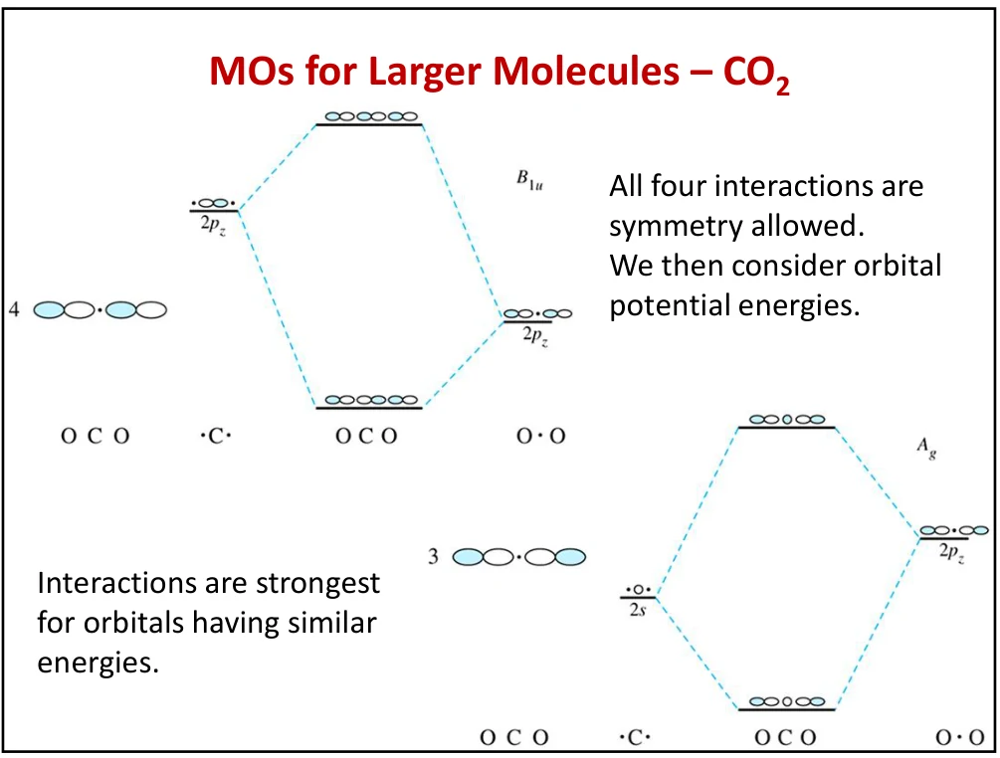
CO₂ 的处理结果值得单独记住：四组相互作用全部有效，16 个价电子填完之后才知道为什么 CO₂ 是直线形、为什么它没有极性。
9. 投影算符：把 SALC 算出来
约化公式只告诉你「有几个 A₁、几个 E」，不告诉你这些组合具体长什么样。要从一个配体轨道出发造出属于某个不可约表示的对称组合，用投影算符（projection operator）。
NH₃（C₃ᵥ）的三个氢 SALC
NH₃ 属 C3v，三个氢 1s 轨道记为 Ha、Hb、Hc。把投影算符作用上去，得到两个不可约表示的组合：
Ψ(A₁) = 1/√3 [Ha + Hb + Hc]
Ψ(Ey) = 1/√6 [2Ha − Hb − Hc]
Ψ(Ex) = 1/√2 [Hb − Hc]
注意 E 是二维不可约表示，所以要用两个正交的组合把这一对填满。三个配体轨道给出 3 个群轨道，与约化结果 A₁ + E（1 + 2 = 3）一致——这同时验证了「轨道数目守恒」。
投影算符法与约化公式解决的是两个不同的问题：约化公式回答「有几个」，投影算符回答「长什么样」。做题时先用约化确定不可约表示的清单，再用投影算符逐个造出来，最后检查群轨道总数是否等于配体轨道总数。
10. H₂O、SiH₄ 与 BeH₂：把流程走一遍
同一套流程在四个分子上的结果如下。对照着看可以发现一个规律：配体越多、对称性越高，群轨道能配上的中心原子轨道就越多，分子轨道也越离域。
H₂O：A₁ 组里有两个氧轨道要同时参与
H₂O 的 A₁ 群轨道只有一个，但氧在 A₁ 对称性下有两个轨道（2s 与 2pz）。因此不是简单的一对一配对，而是三个轨道（1 个群轨道 + 2 个中心原子轨道）混合，产生三个 A₁ 分子轨道：一个强成键、一个近似非键、一个强反键。B₁ 组则是干净的一对一——O 2px 与 B₁ 群轨道只生成两个分子轨道。总数 3 + 2 = 5？不对，是 3 + 2 = 5 个来自成键框架，还要加上氧的 2py（非键，属 B₂）共 6 个分子轨道。
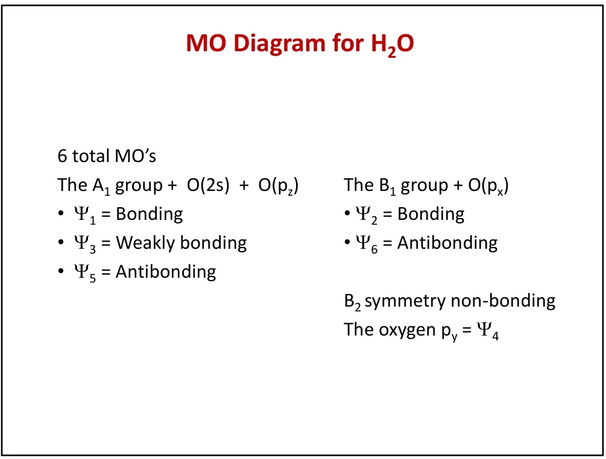
SiH₄（T_d）与 BeH₂
SiH₄ 属 Td：四个 H 1s 给出 a₁ + t₂ 两组群轨道。a₁ 只能配 Si 的 3s，t₂ 配 Si 的 3px、3py、3pz 三个简并轨道。计数核对：4 个配体轨道 + Si 的 4 个价轨道（3s、3p×3）= 8 个分子轨道。
BeH₂ 属 D∞h：两个 H 1s 给出 σg + σu，分别配 Be 的 2s 与 2pz，共 4 个分子轨道。它是「两个配体 + 一个中心原子」的最小范本。
写分子轨道数目时，用轨道守恒核对最可靠：参与组合的原子轨道总数 = 产出的分子轨道总数。这一步能立刻查出漏配或重复配对。
11. 更难的一例：TaH₅ 的 SALC
TaH₅ 属 C4v：一个顶点氢（记为 ΨA）在 C₄ 轴上，四个底面氢（ΨB、ΨC、ΨD、ΨE）构成一个正方形。五个 H 1s 在 C4v 的五个操作类下的可约表示是：
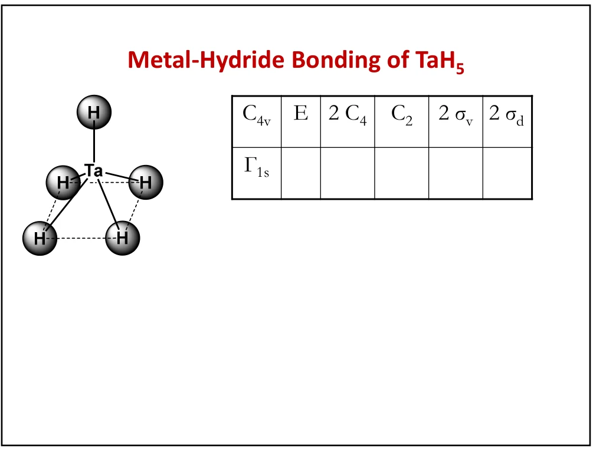
这里最容易漏的是两个 A₁。直观上「顶点 + 底面全对称」只能想到一个全对称组合，但约化公式给出两个——因为顶点氢所在的位置本身也提供一个全对称的基。看到 Γ 里某个不可约表示的个数大于 1，就要立刻意识到需要造出多个正交组合，而不是一个。
最后一个组合里的 ± 是一个重要细节：顶点轨道与底面全对称组合可以同相也可以反相，两者分别给出成键与反键形式的 A₁ 组合。这正是 Γ 里出现两个 A₁ 的物理含义。
12. 苯的 π 成键：群论给出的芳香性
苯属 D6h。把六个垂直于环平面的 2pz 轨道作为基，在每个操作类下求特征标，得到 π 体系的可约表示：
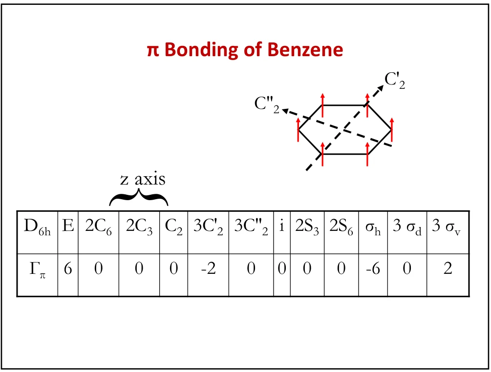
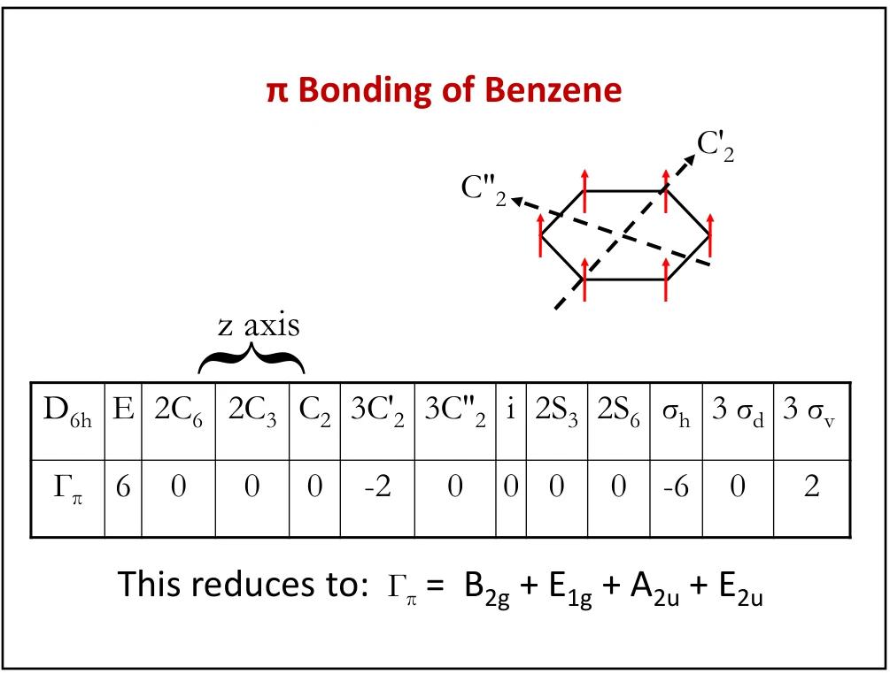
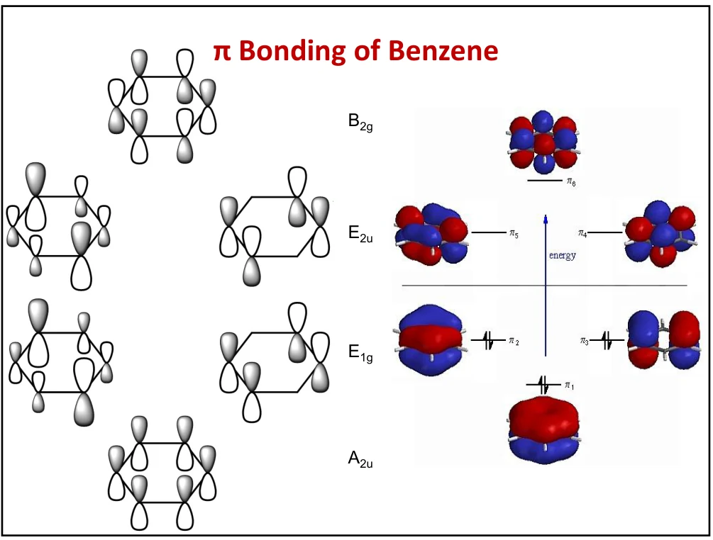
能量顺序可以只靠节面数判断：节面越多，能量越高。A2u 完全没有节面所以最低，B2g 节面最多所以最高。这条规律在检查作图结果时非常有用——如果算出来的顺序与节面数矛盾，一定是特征标序列对错了操作类。
六个 π 电子闭合芳香壳层
苯的六个 π 电子按能量从低到高填充：2 个进 A2u，4 个进简并的 E1g（洪特规则不生效，因为只有 4 个电子填 4 个位置）。恰好填满 A2u + E1g 这一组成键与弱成键壳层，剩下的 E2u 与 B2g 全空。这就是「6 个 π 电子特别稳定」的群论表述——芳香性在 MO 语言里就是价电子恰好填满一个闭合壳层。
Walsh 图是同一思想的另一种呈现：把同一个分子在不同几何下的轨道能量画在一张图上，看哪一套几何总能量更低，从而预言形状。它把「能级图」从「一个分子」推广到「一个分子的不同构型」。
13. BF₃：部分双键与 Lewis 酸性
BF₃ 属 D3h。把三个氟的价轨道按类型分组，在 D3h 下求可约表示，结果是：
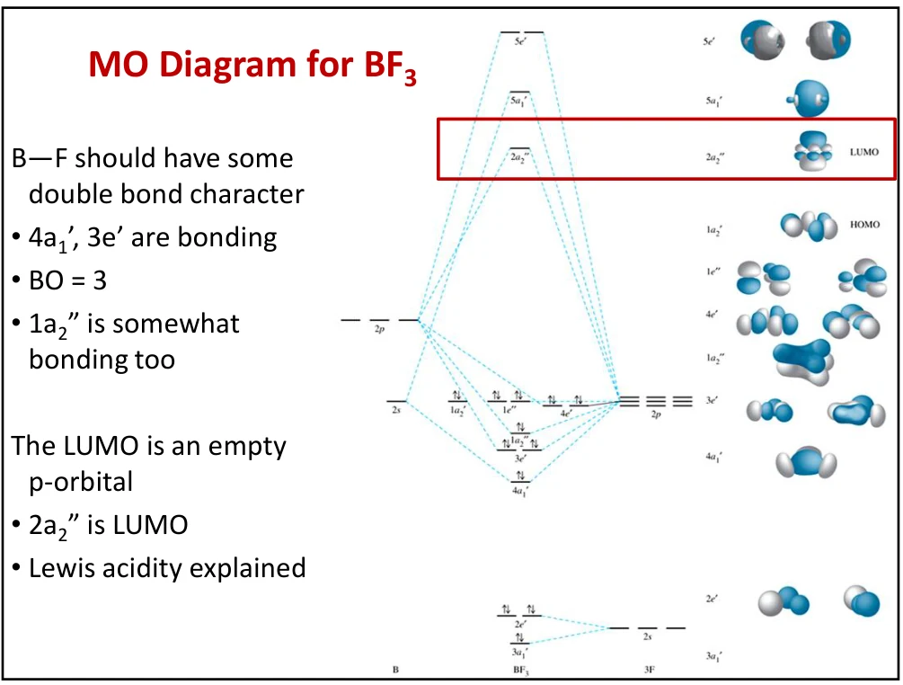
为什么 B–F 键级是 3 而不是 1
如果只看 σ 框架，硼用三个 sp² 杂化轨道与三个氟成三个单键，键级各为 1。但氟的 2pz 轨道（垂直于分子平面）属 a₂″ + e″，其中 a₂″ 与硼的 2pz 对称性匹配、能量也接近，于是形成 π 型相互作用。三个氟各贡献一份 π 电子给硼的 2pz，整个 π 体系把三个 B–F 键都加强——平均下来每个 B–F 键带有部分双键性质，总键级为 3。
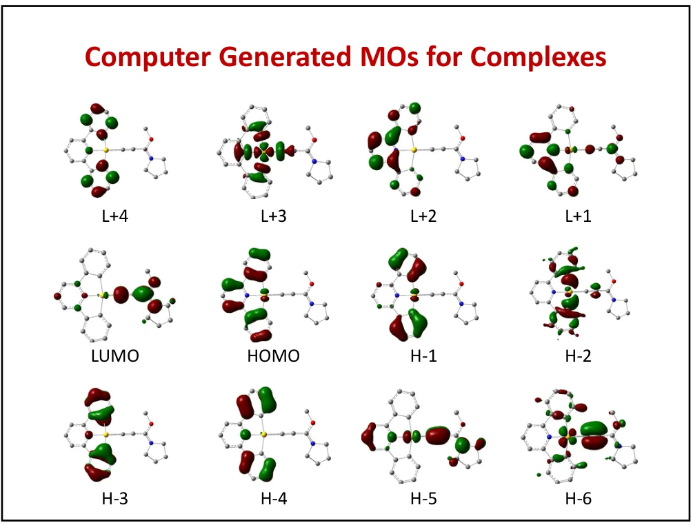
「部分双键」并不改变分子形状——BF₃ 仍然是 D3h 三方平面，VSEPR 的预言依然成立。MO 只是在键的强度上给出了比 Lewis 结构更准确的图像。
为什么 BF₃ 是 Lewis 酸
BF₃ 的 LUMO 是 2a₂″——一个垂直于分子平面的 π 型空轨道，能量低且形状合适，可以接受外来电子对。这就是 BF₃ 作为典型 Lewis 酸的结构基础。下一节用它解释具体的加合反应。
14. 用 HOMO–LUMO 解释加合物与酸碱反应
把两个分子的前线轨道放在一起比较，就能判断它们是否容易反应、产物是否稳定。规则很简单：给体的 HOMO 与受体的 LUMO 能量越接近、重叠越好，相互作用越强、新成键轨道被稳定得越多。
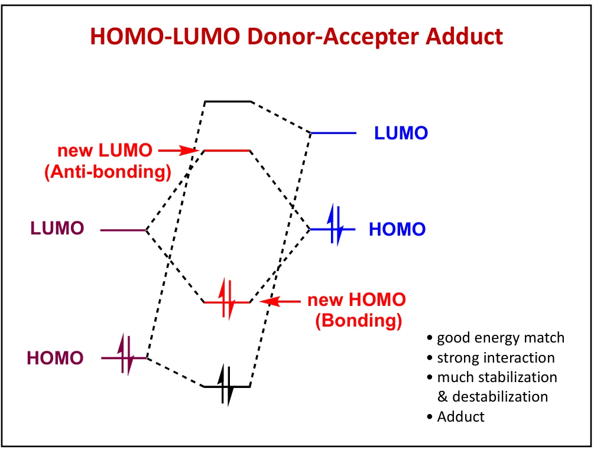
F₃B·NH₃ 的能级变化
反应前，NH₃ 的孤对是它的 HOMO，BF₃ 的 2a₂″ 是空轨道。两者能量相近、对称性允许，组合后生成一个新的成键轨道（成为加合物的 HOMO，能量远低于原来的 NH₃ 孤对）和一个反键轨道（能量升高，保持空置）。电子从高能的孤对落入低能的新成键轨道，总能量下降——这就是「加合物稳定」的定量含义。
同一条推理也解释了为什么 BF₃ 能与 NH₃ 形成稳定加合物，却不与 CH₄ 反应：CH₄ 没有可用的孤对 HOMO，能量与对称性都不匹配。
15. 复习清单
下面这些判断是本讲所有习题的公共骨架。做完题后逐条对照，比重复看讲义更有效。
- 能用一句话说明 MO 理论相对 VB 理论解决了什么问题：O₂ 的顺磁性、O₂ 系列物种的键级与键长顺序。
- 能写出组合的三条规则，并知道「对称性匹配」是必要条件而非充分条件。
- 能区分「重叠程度 S」与「相互作用强度」：前者决定分裂大小，后者还取决于能量差。
- 能在 σ/σ*、π/π* 之间正确判断节面数与能量高低。
- 能判断一个分子该不该使用 g/u 标记——依据是有没有反演中心。
- 能默写键级公式，并计算 O₂、O₂⁺、O₂⁻、O₂²⁻ 的键级。
- 能说明第二周期为什么有两套能级顺序，并说出分界点。
- 能写出 PES 的 E轨道 = hν − E动能，并说明 XPS 与 UPS 的分工。
- 能解释异核双原子分子为什么不用 g/u，以及成键轨道偏向哪一侧。
- 能说明 CO 的 HOMO 为什么定域在碳上，以及 σ 给体 + π 反馈键的协同效应。
- 能由 σ 给体与 π 反馈键推断 ν(C–O) 相对自由 CO（2143 cm⁻¹）的变化方向。
- 能列出群轨道的四个构造步骤，并知道 D∞h 通常降为 D2h 处理。
- 能用约化公式求出 H₂O（A₁ + B₁）、NH₃（A₁ + E）、SiH₄（a₁ + t₂）、TaH₅（2A₁ + B₁ + E）。
- 能在 Γ 里出现重复不可约表示（如 TaH₅ 的两个 A₁）时，正确地造出多个正交组合。
- 能用投影算符公式写出 NH₃ 的三个氢 SALC，并做归一化。
- 能用轨道守恒核对分子轨道总数：参与组合的原子轨道数 = 产出的分子轨道数。
- 能用节面数判断苯的 π 轨道能量顺序，并说明 6 个 π 电子闭合壳层与芳香性的关系。
- 能说明 BF₃ 的 LUMO（2a₂″）为什么使它成为 Lewis 酸。
- 能用 HOMO–LUMO 匹配解释 BF₃ + NH₃ 加合物的稳定性。
16. 教材与课件对照
本讲内容覆盖讲义第 1–81 页。下表给出各节与讲义页码的对应关系，便于回看原图。
作业
Chapter 5 Problems 5.2, 5.3, 5.5, 5.14, 5.15, 5.17, 5.20, 5.27, 5.29, 5.30，截止 2026 年 11 月 6 日（周五）。
17. 本页相对讲义的处理说明
本页以讲义第 1–81 页为唯一内容来源，重写为中文阅读版。为便于复习，讲义中只能以图片给出的推导过程与数据，已改写为可检索、可复制的表格；讲义原图只保留解释上不可替代的关键图（能级图、群轨道、前线轨道、特征标表），共 25 幅，其余以文字与表格替代。
- 讲义把 O₂ 的 12 个价电子写成「12 valence electrons」，这是按两个氧各 2s²2p⁴ 计算的价层电子数，不含 1s 内层。若按全部电子数则是 16，两者不要混淆。
- O₂ 的能级顺序与 N₂ 不同（见第 3 节的两套顺序表）。绘图时务必确认所采用的那一套，这是本讲最常见的作图错误。
- C₂ 的四重键结论来自 Nature Chemistry 2012, 4, 195–200（Shaik 等），它是对传统「键级 = 2」图像的修正，不是入门教材的标准表述。考试作答时以课程要求的口径为准。
- [Zn(I)]₈ 立方芳香性引用 Nature Communications 2015, 6, 6331；[Au₃]⁺ 的等瓣类似物论证引用 Angew. Chem. Int. Ed.。两处文献信息已按讲义原文保留，建议核对卷期页码。
- TaH₅ 属于 C₄ᵥ；讲义把它与 NH₃（C₃ᵥ）并列，是因为两者都用投影算符法求 SALC，但 TaH₅ 的 Γ 约化出现两个 A₁，处理时容易漏掉一个。
- 苯的 Γπ 特征标序列（6, 0, 0, 0, −2, 0, 0, 0, 0, −6, 0, 2）与 D6h 的 12 个操作类一一对应，顺序不要打乱。
- BF₃ 的键级为 3 是 MO 分析的结论；但 B–F 的「部分双键性质」并不改变 VSEPR 预言的三方平面几何。
- NH₃ 的 HOMO 在 C₃ᵥ 下为 a₁（氮的孤对）；BF₃ 的 LUMO 为 2a₂″。两者对称性允许组合，这是加合物形成的前提。